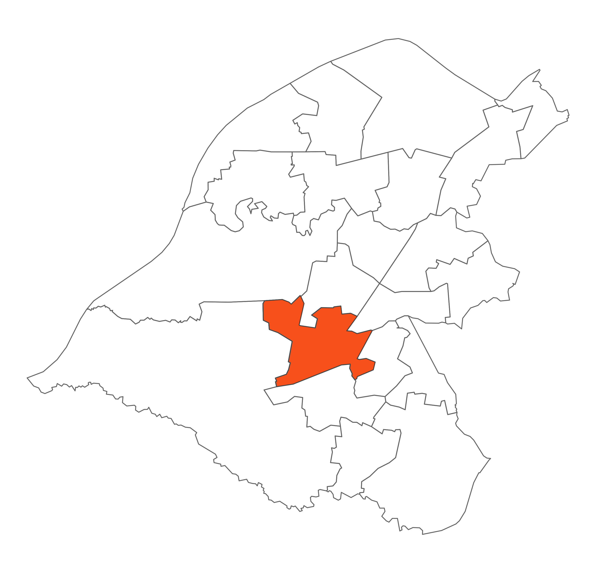

 Broadheath has a mix of land uses. To the south the Bridgewater Canal, industrial and retail areas, to the north a new housing development known as Stamford Brook. To the west it has agricultural areas with views across to Warburton and Dunham and to the east residential areas of Timperley.
Broadheath has become an area of major regeneration. The development of a retail park on the site has seen some high profile retailers move to the area. The most recent piece of development is the Stamford Brook Development. The National Trust in partnership with Bryant Homes and Redrow Homes are providing just over 700 new energy efficient homes, new community woodland and a major river restoration project, the largest of its kind in the country. In addition Section 106 monies will provide a new community facility.